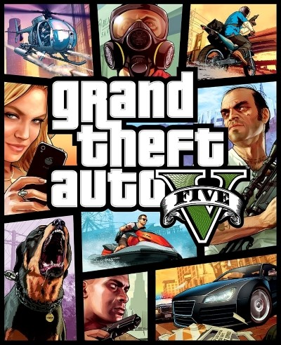

STALKER 2: Heart of Chornobyl (з англ. — «STALKER 2: Серце Чорнобиля»; укр. STALKER 2: Серце Чорнобиля ) — комп'ютерна гра в жанрі шутера від першої особи з відкритим світом , розроблена та видана українською компанією GSC Game World для Windows та Xbox Series X2 . Як і в попередніх частинах серії дія STALKER 2: Heart of Chornobyl відбувається в зоні відчуження Чорнобильської АЕС , куди авантюристи-«сталкери» проникають у пошуках фантастичних артефактів, але стикаються з мутантами, аномаліями та іншими небезпеками. Гра поєднує в собі елементи жанрів шутера від першої особи та survival horror , а також пропонує для дослідження великий відкритий світ.
Left 4 Dead 2 - комп'ютерна гра в жанрі кооперативного шутера від першої особи з елементами survival horror , розроблена та видана американською компанією Valve Corporation. Є сиквелом гри Left 4 Dead. Була випущена для Microsoft Windows та Xbox 360 17 листопада 2009 року в США та 20 листопада в Євросоюзі та Великій Британії . Світова прем'єра відбулася у 2009 році на всесвітній ігровій виставці E3 . 5 жовтня 2010 року Left 4 Dead 2 стала доступною на платформі macOS . 4 травня 2013 року вийшла бета-версія гри на платформі Linux .
Grand Theft Auto: San Andreas ( скор . GTA: San Andreas , GTA: SA ) - комп'ютерна гра в жанрі action-adventure , розроблена студією Rockstar North і видана компанією Rockstar Games. П'ята за рахунком гра в серії Grand Theft Auto. Дія гри розгортається у вигаданому штаті Сан-Андреас. Головний герой - Карл "Сі-Джей" Джонсон , який повертається додому після смерті своєї матері і дізнається, що його банда втратила більшу частину своєї території. Протягом гри він намагається відновити банду, стикається з корумпованою владою та впливовими злочинцями та поступово розкриває правду про вбивство своєї матері.

Grand Theft Auto V (скор. GTA V ) - комп'ютерна гра в жанрі action-adventure з відкритим світом , розроблена компанією Rockstar North і видана компанією Rockstar Games. Спочатку гра була випущена для ігрових консолей PlayStation 3 і Xbox 360 у 2013 році , у 2014 році перевидана для PlayStation 4 та Xbox One , у 2015 році для Windows та у 2022 році для PlayStation 5 та Xbox Series X/S . Є п'ятнадцятою за рахунком грою серії Grand Theft Auto і наступною великою грою після Grand Theft Auto IV, випущеноїв 2008.
Red Dead Redemption 2 (укр. Червоне смертельне каяття 2) — це пригодницька відеогра, розроблена і видана Rockstar Games. Це третя частина в серії Red Dead, і приквел до гри Red Dead Redemption. Сюжет гри розгортається в 1899 році у вигаданій версії середнього заходу і півдня Сполучених Штатів. У центрі сюжету злочинець Артур Морґан, член банди Ван дер Лінде, який намагається вижити проти урядових сил, ворожих банд та інших ворогів. Історія також слідує за іншим членом банди Джоном Марстоном, головним героєм першої Red Dead Redemption.